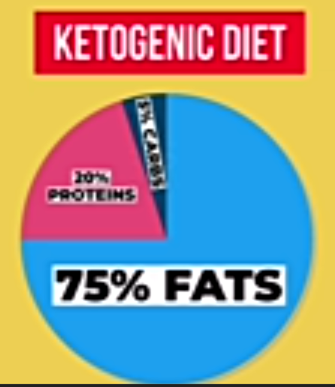

-
Meat:
Red meat, steak, beef, pork, chicken, Mutton and bacon.
-
Fatty fish: Salmon, trout, tuna, herring and mackerel.
-
Eggs: Pastured, organic and conventional eggs.
-
Nuts and seeds: Pumpkin seeds, almonds, flaxseeds,walnuts, peanuts and chia seeds.
-
Non-starchy Vegetables:Green veggies, tomatoes, onions, peppers, broccoli, garlic, cucumber, onions, tomatoes, cabbage, mushrooms, kale and carrots.
-
Drinks: Unsweetened coffee and tea.
-
Condiments: Salt, peeper, vinegar, fresh herbs and spices.
-
Fruits:Ovacado, Oranges, bananas, mangoes, pineapples, lemon, blueberries and strawberries.
-
Grains:Brown rice,oats,whole grains, unprocessed grains.
-
Legumes:Green beans, kidney beans, peanuts and lentils.
- Tubers:Sweet potatoes, potatoes.
Unhealthy foods
- Processed wheat
- Processes flour
- Processed rice
- Milk
- Sugar
Healthy Fats and Oils
- Ghee
- Beef tallow
- Butter
- Fish oil
- Extra virgin olive oil
- Ovacado oil
- Coconut oil
- Macadamia oil
- Poultry fats
Unhealthy oils
- Seed oils
- Vegetables oils
- Maize oils
What are the 20 most healthy foods?
Research from 2021 developed a scoring system of food based on 54 attributes covering these nine domains: nutrient ratios, vitamins, minerals, food ingredients, additives, processing, specific lipids, fiber and protein, and phytochemicals. Based on the mean values of this scoring system, the healthiest food categories are:
- legumes
- vegetables
- fruit
- fish and seafood
- sauce condiment
- dairy
- beverages
- grains
- meat, poultry, eggs
- fats and oils
What is the #1 healthiest food?
Research looking at the nutrient density of various food groups found that the following foods contain the most nutrients:
- organ meats
- small fish
- dark green leafy vegetables
- goat meat
- beef
- eggs
- milk
- canned fish with bones
- mutton
- lamb
